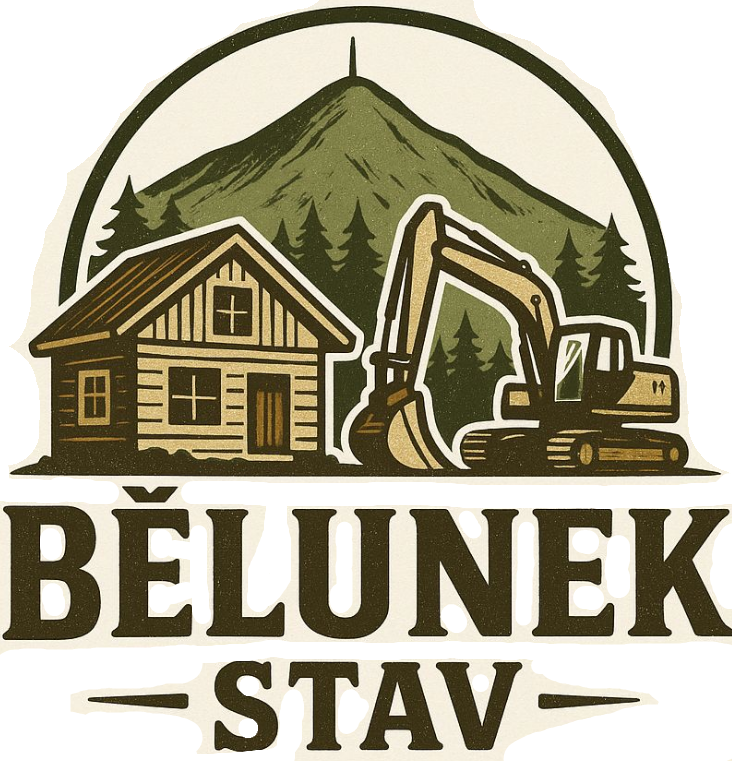
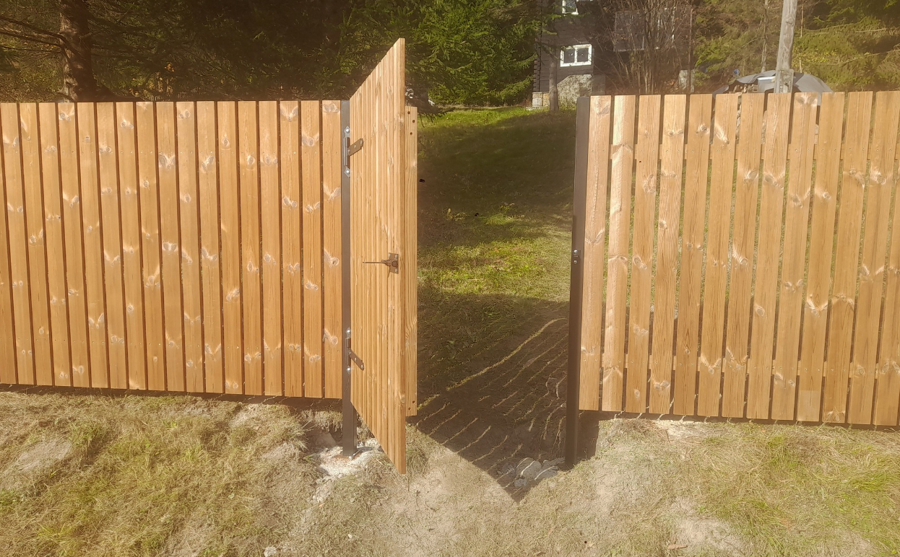
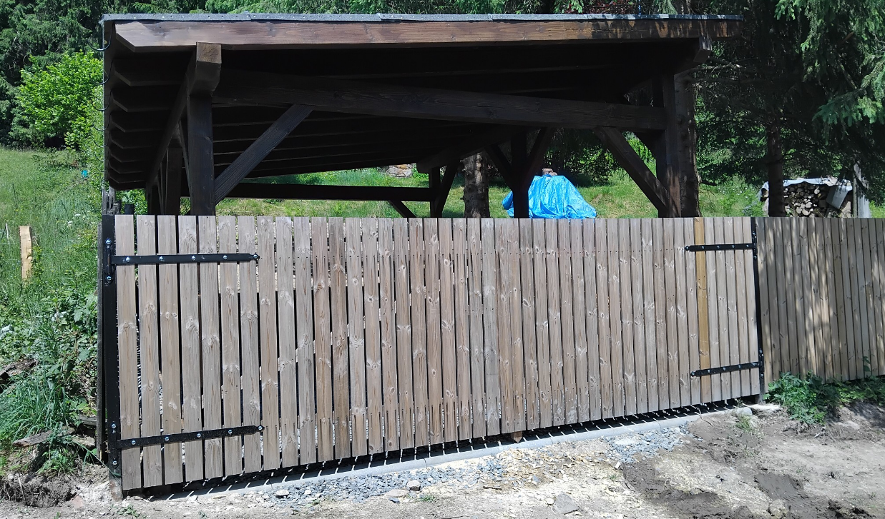
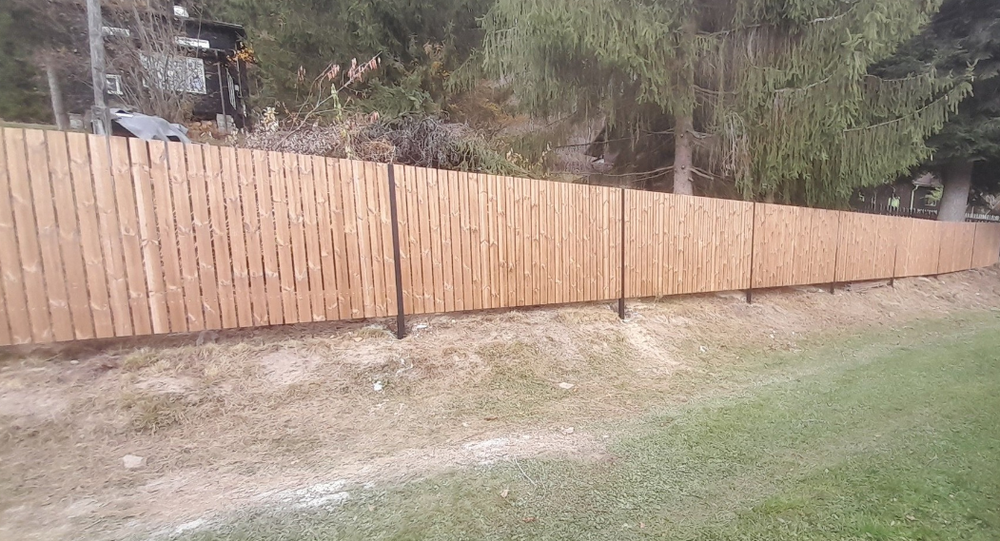

Stavíme srdcem z přírodních materiálů
Designové a odolné ploty, zábradlí a dekorativní prvky pro zahrady a domy. Každý projekt přizpůsobíme vašemu pozemku a stylu bydlení.
Mám zájem o plot či zábradlíNaše dřevěné ploty a zábradlí kombinují estetiku, bezpečnost a odolnost. Díky individuálnímu návrhu přesně zapadnou do vašeho prostředí a vydrží dlouhá léta s minimální údržbou.
Každý plot či zábradlí navrhujeme na míru tak, aby ladil s vaším domem i zahradou.
Moderní spojení přírodních a odolných materiálů zajišťuje dlouhou životnost.
Používáme materiály a povrchové úpravy, které vyžadují minimum péče.


